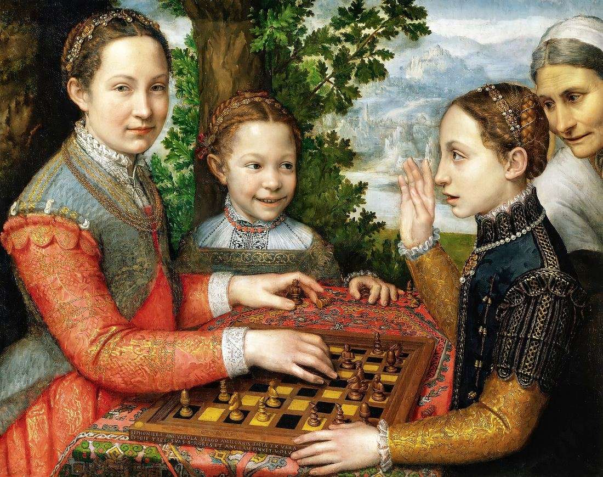

Знакомство
Вы рассказываете, что привело. Без подготовки и «правильных» слов. Я задаю вопросы, а вы смотрите, подходит ли вам такой формат разговора.
Разберём, как вы разговариваете с близкими и с самим собой, и почему одни и те же сценарии повторяются. Для взрослых и для пар.
Консультация 3 500 ₽ · консультация пары 7 000 ₽
В разговоре отвечает Ребёнок, Родитель или Взрослый. Учимся слышать, кто говорит, 
Эрик Берн назвал обмен репликами транзакцией. Выберите ситуацию и ответ, и увидите, из какого состояния говорит каждый и куда летит реплика.
Ситуация
Ответ
Реплика
Учебная схема, не диагноз: в жизни за одной фразой стоит больше, чем видно на рисунке.
Запрос не обязан звучать по-научному. Достаточно знать, что в какой-то момент стало тесно.
Транзактный анализ строится на контракте: вы сами формулируете, что хотите изменить, и мы вместе проверяем, что это получается.
Вы рассказываете, что привело. Без подготовки и «правильных» слов. Я задаю вопросы, а вы смотрите, подходит ли вам такой формат разговора.
Договариваемся о цели: что именно изменится в вашей жизни, по каким признакам вы это заметите и сколько встреч для этого может понадобиться.
Разбираем реальные ситуации: из какого состояния вы реагируете, в какие «игры» попадаете, откуда берётся сценарий. Между встречами обычно есть небольшие наблюдения.
Проверяем контракт: что получилось, что осталось. Если цель достигнута, завершаем. Если появилась новая, оформляем новый контракт.
Для одного человека: личный запрос, отношения, сценарии.
Включает разговор о вашем запросе, разбор ситуаций в логике транзактного анализа и договорённость о следующем шаге. Формат и длительность уточняются при записи.
3 500₽ за консультацию
ЗаписатьсяДля двоих: когда ссоры повторяются, а выйти из круга пока не получается.
Оба партнёра говорят и слушают по очереди, я слежу за тем, чтобы разговор не скатывался в обмен упрёками. Смотрим, из каких состояний вы обращаетесь друг к другу и что можно изменить уже на этой неделе.
7 000₽ за консультацию пары
ЗаписатьсяНе даю советов «как правильно» и не ставлю диагнозов. Помогаю увидеть, как устроены ваши реакции, и вернуть выбор там, где сейчас срабатывает привычка.
Диплом и обучение по транзактному анализу покажу на первой встрече: спрашивайте о них прямо, это нормальная часть знакомства.
Шахматная партия, 1555. Берн называл «играми» повторяющиеся обмены между людьми.
Подход Эрика Берна: в любом разговоре мы говорим из одного из трёх состояний, Родителя, Взрослого или Ребёнка. Если видно, из какого, проще менять привычные, но неудобные реакции.
Это психологическое консультирование. Оно не заменяет лечение у врача: если нужна медицинская помощь, я скажу об этом прямо.
Заранее не обещаю. Число встреч зависит от запроса, и мы оговариваем его в контракте. Часто стоит начать с одной консультации и посмотреть, как вам.
Для консультации пары нужны оба. Если партнёр пока не готов, можно начать одному: изменения в вашей части общения тоже влияют на пару.
Содержание консультаций конфиденциально. Исключения возможны только там, где закон или угроза жизни требуют иного, и об этом я скажу заранее.
Консультация не служба экстренной помощи. При угрозе жизни звоните 112. Если нужна поддержка в острой ситуации, обратитесь на горячую линию или к врачу.
Оставьте заявку в форме ниже: напишу, чтобы согласовать время и формат. Оплату обсудим при записи.